Customizing the Outlook Interface
Make Outlook work the way you want
Tailoring the visual layout and behavior of Outlook to reduce screen clutter and match your personal working preferences.
A. Restore the Classic Ribbon
- Look at the top ribbon bar in Outlook
- On the right-hand side, click the drop-down arrow (▾)
- From the layout options, select “Classic Ribbon”
- The ribbon will expand to show full-sized buttons instead of the simplified compact menu
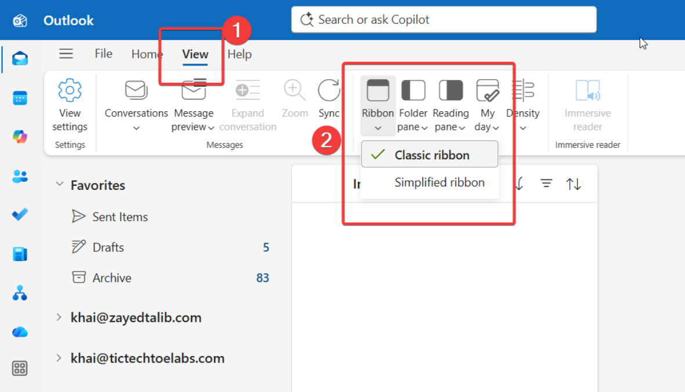
B. Disable Conversation Threads
- Click the “View” tab in the top ribbon
- Find the “Conversations” section
- Select “Show each message separately”
- Emails will now appear chronologically instead of grouped by conversation
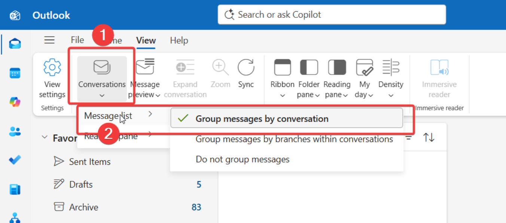
C. Adjust Message Density
- In the ribbon bar, click “Density”
- Choose between “Cozy” or “Compact”
- Cozy reduces spacing slightly; Compact fits the most emails on screen
- This is especially useful on smaller laptop screens
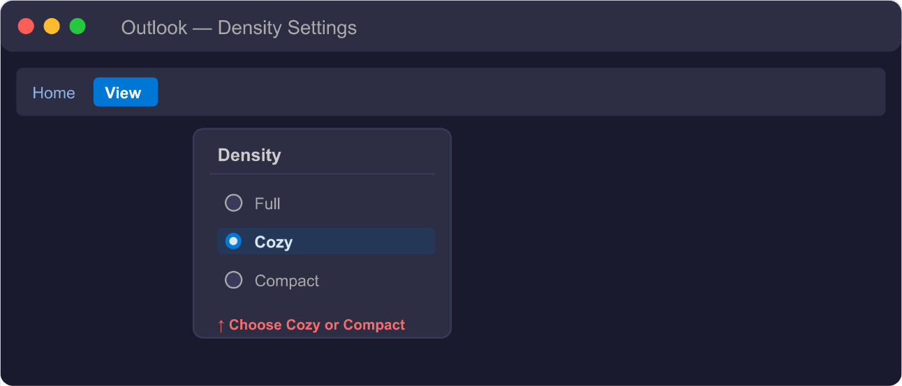
D. Turn Off Focus Mode
- Go to View settings (via the View tab or Settings gear)
- Under Focused Inbox, select “Don’t sort my messages”
- Click “Save”
- All emails will now appear in a single unified inbox without auto-sorting
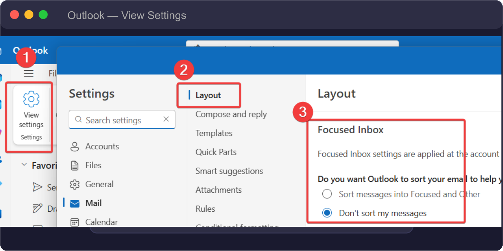
E. Pop-out Replies
- Click the Settings gear icon (⚙︎) in the top right
- Navigate to Email → Compose and reply
- Find the reply window setting and change it to “Pop out to a new window”
- Click “Save”
- Replies will now open in a separate window, letting you read other emails simultaneously
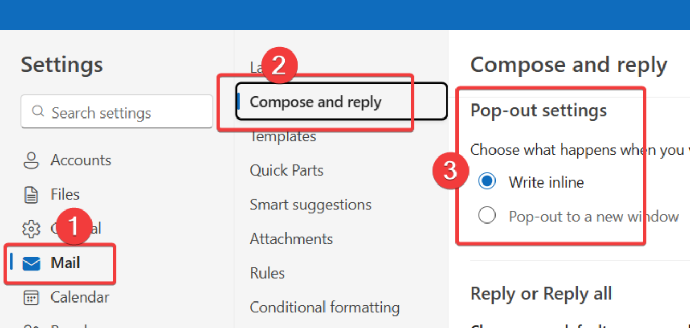
F. Enable Dark Mode
- Click the Settings gear icon (⚙︎) in the top right
- Navigate to General → Appearance
- Select “Dark Mode” (or set it to follow your system settings)
- Outlook’s interface will switch to a dark theme to reduce eye strain
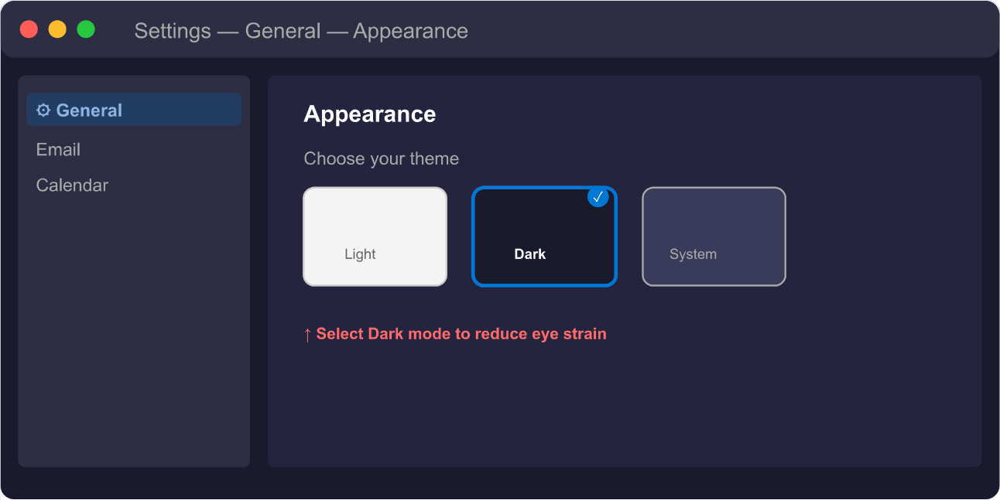
Mastering Inbox Organization & “Inbox Zero”
Triage and manage email efficiently
A structural system utilizing folders, categories, and automation to triage your emails efficiently.
A. Create a 3-Folder System
- In the left sidebar, find “Folders”
- Click the three dots (···) next to “Folders”
- Select “Create new folder”
- Create three folders: “Action Items”, “Waiting On”, and “Read Later”
- These three folders form the foundation of your email triage system
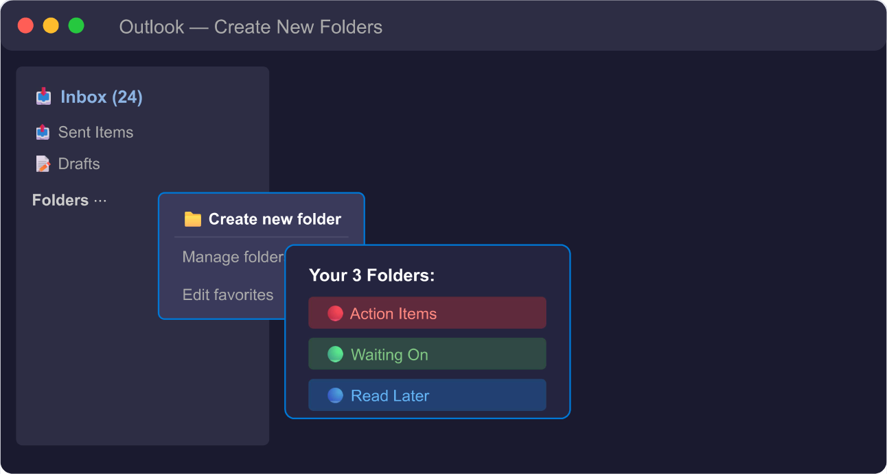
B. Color-Code and Sort Folders
- Click the three dots (···) next to each new folder
- Assign distinct colors: Red for Action Items, Green for Waiting On, Blue for Read Later
- Press, hold, and drag each folder to reorder them
- Position them directly under your Inbox for quick access
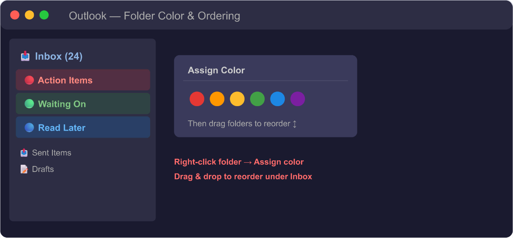
C. Triage Effectively
- Read each email as it arrives
- If the response takes less than 2 minutes → reply immediately, then press E (or Backspace) to Archive it
- If it requires more time → drag the email to the “Action Items” folder
- If you delegate the work → forward the email, then drag the original to “Waiting On”
- Newsletters and FYI emails → move to “Read Later”
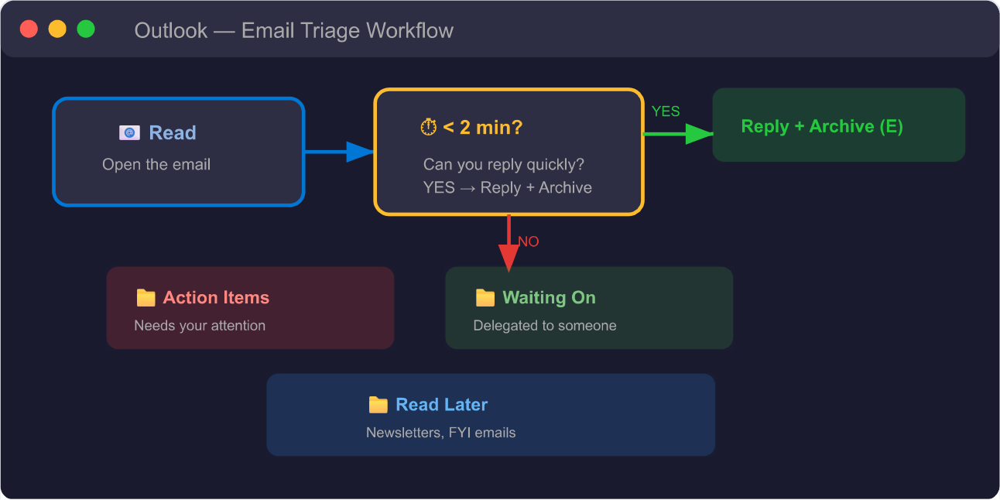
D. Pin Important Tasks
- Navigate to your “Action Items” folder
- Highlight a highly urgent email
- Click the Pin icon
- The email will be locked at the top of the folder, always visible
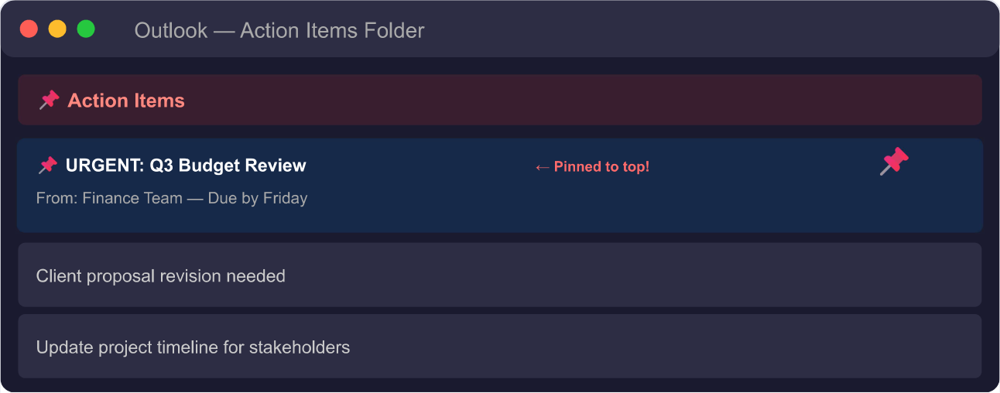
E. Use Color Categories
- Right-click an email
- Select “Categorize”
- Click “New category” and give it a project name and color
- Click the star icon next to the category to favorite it
- A dedicated folder for that category will appear in your left-hand menu
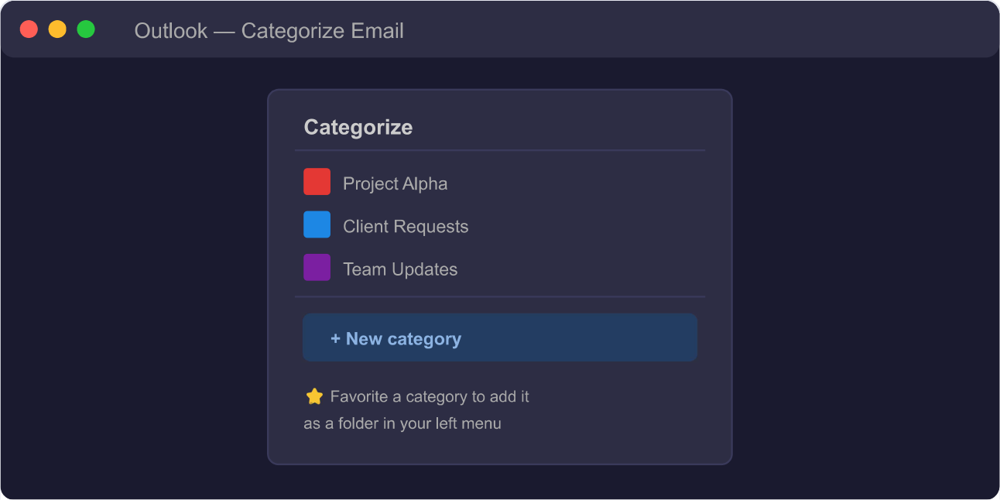
F. Automate Newsletters with Rules
- Right-click an incoming newsletter email
- Select “Rules” → click “Create”
- Click “More options” to define the condition (e.g., From contains “newsletter”)
- Set the action to “Move to Read Later”
- Check the box to “Run the rule now”
- Click “Save” — all matching future emails will be auto-sorted
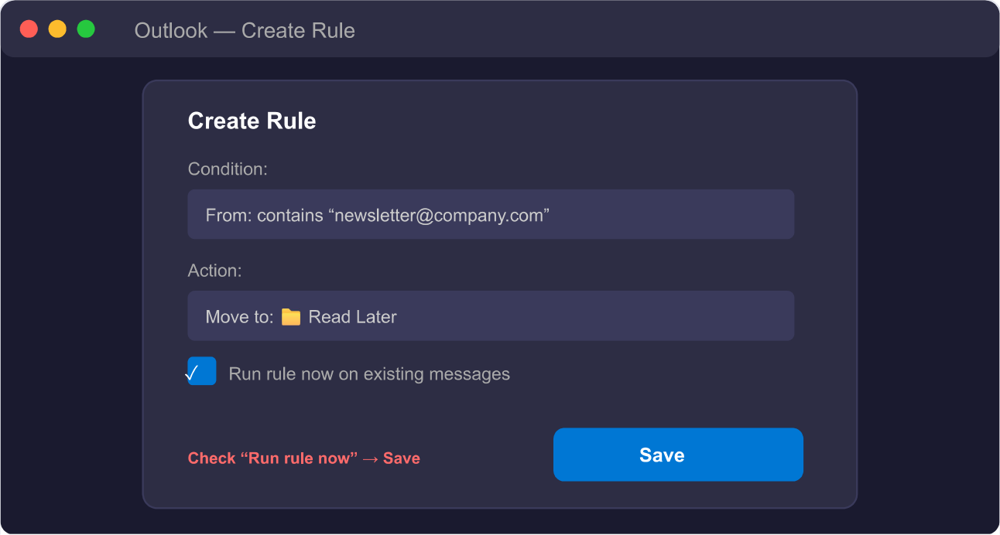
Calendar Management & Scheduling
Schedule smarter, meet better
Efficient tactics to create meetings, accommodate external time zones, and build breathing room into your daily schedule.
A. Drag Emails to Create Meetings
- Open the “My Day” sidebar by clicking the calendar icon at the top
- Left-click and drag an email from your Inbox onto the calendar
- Outlook will automatically copy the attendees, subject line, and email body into a new meeting invite
- Adjust the time and click Send — no need to re-enter any details
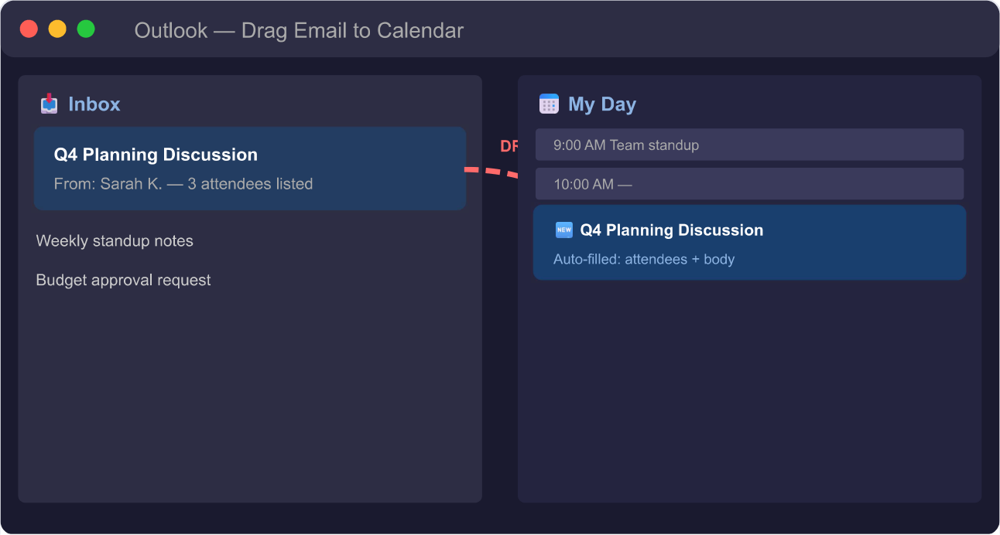
B. Add Multiple Time Zones
- Go to Settings (⚙︎) → Calendar → View
- Scroll down to “Time zones”
- Add and label multiple time zones (e.g., “Singapore”, “US East”, “London”)
- The additional zones will display side by side next to your calendar in day/week view
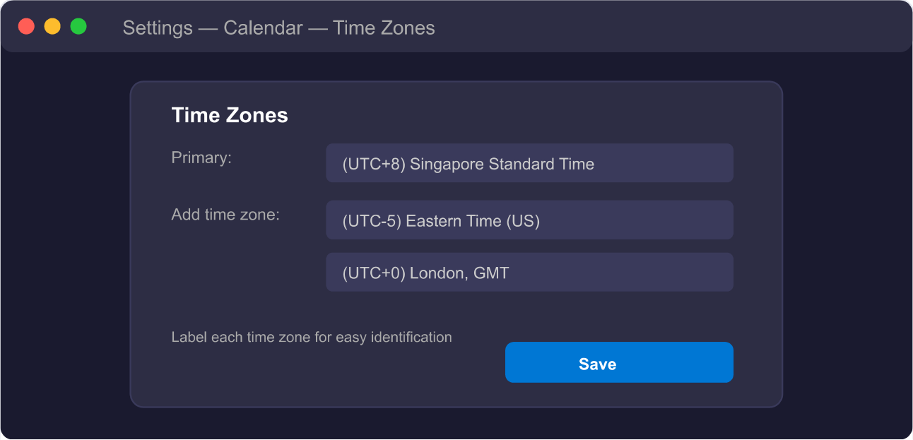
C. Build in Meeting Buffers
- Go to Settings (⚙︎) → Calendar → Events and invitations
- Check the box for “Shorten duration for all events”
- Choose “End event early”
- Select a buffer time: 5, 10, or 15 minutes
- All meetings you create will automatically end early, giving you breathing room
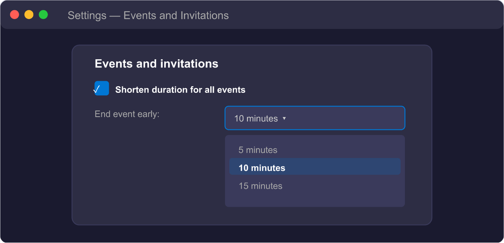
D. Use Scheduling Polls
- Start drafting a new meeting email and add your attendees
- In the ribbon, click “Scheduling Poll” on the right side
- Select a few time slots that work for you
- Click “Insert” to embed the poll into the email
- Recipients can vote on their preferred time — no back-and-forth needed
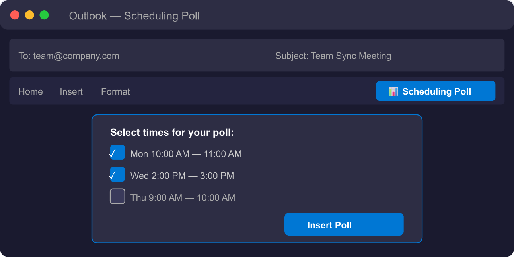
E. Duplicate Recurring Events
- Right-click on an existing calendar event
- Select “Duplicate event”
- All details (attendees, description, duration) are instantly copied to a new event
- Simply change the date and time as needed
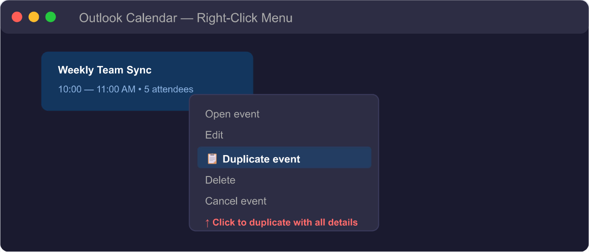
F. Silently Add Attendees
- Open an existing calendar event
- Add a new invitee in the attendees field
- When prompted by Outlook on who to notify, select “Only added or removed attendees”
- This avoids spamming the entire group with an update notification
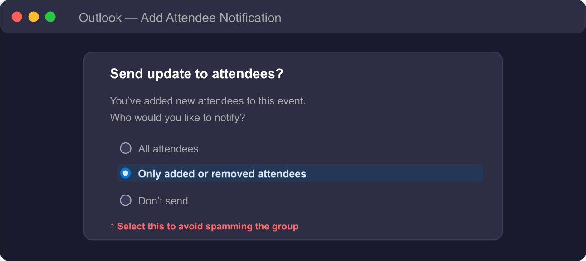
G. View Calendar and Inbox Side-by-Side
- Right-click the calendar icon in the left menu and select “Open in new window”
- Or click the “My Day” icon at the top of the screen
- Your daily agenda will be locked to the right side of your inbox
- You can now view emails and your schedule simultaneously
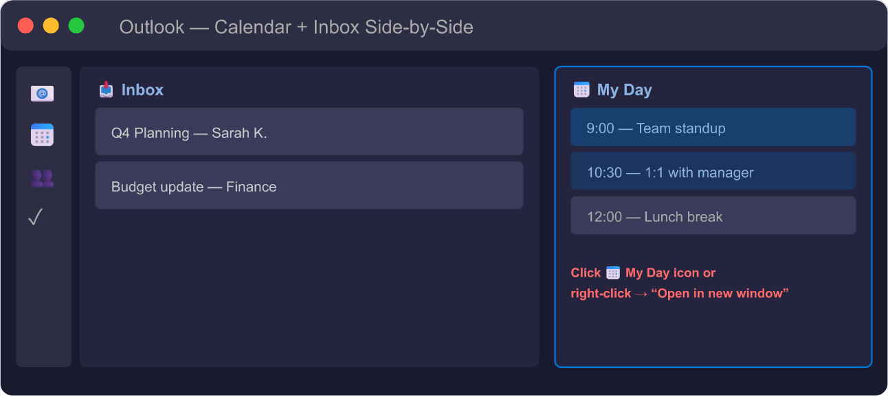
Microsoft 365 Integrations in Outlook
Use Outlook as your command center
Using Outlook as a central hub to access and share content across Microsoft Teams, To-Do, and OneDrive.
A. Share Emails to Teams
- Select the email you want to move to Teams
- Click the “Apps” button on the right side of the email
- Choose “Share to Teams”
- Select a channel or group chat as the destination
- The conversation moves from your inbox into Microsoft Teams
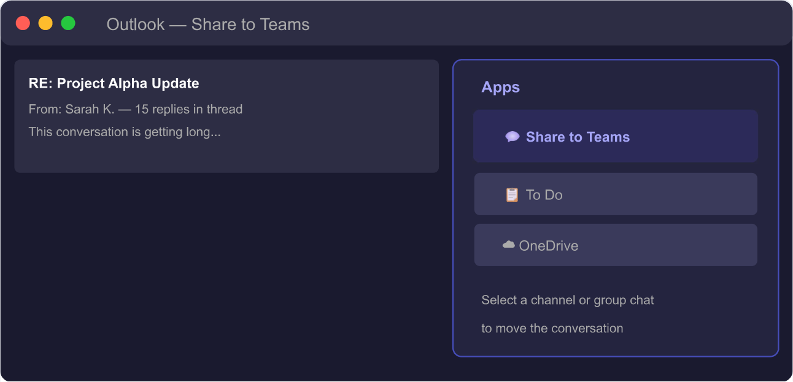
B. Turn Emails into To-Do Tasks
- Open the “To Do” icon on the right-hand sidebar
- Left-click and drag an email into the To-Do window
- A task is instantly generated with a direct link back to the source email
- You can now track the task with due dates and reminders
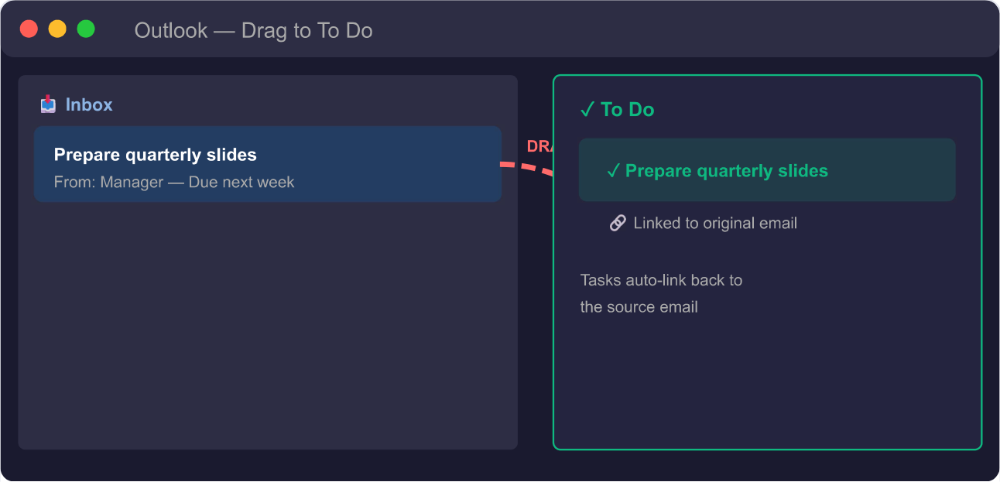
C. Block Time for Tasks
- From the same To-Do sidebar, type in the task you need to work on
- Any tasks added here will be shown on your Calendar too
- A calendar event is created with dedicated time for that specific work
- This ensures you have protected focus time to complete important tasks
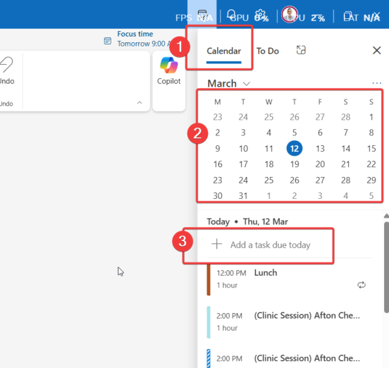
D. Access OneDrive in Outlook
- Click the OneDrive icon (cloud) in the left-hand menu of Outlook
- Browse, preview, and share your cloud files directly inside Outlook
- Open Word documents, spreadsheets, and presentations without opening a separate app
- You can also share file links directly from within Outlook’s OneDrive panel
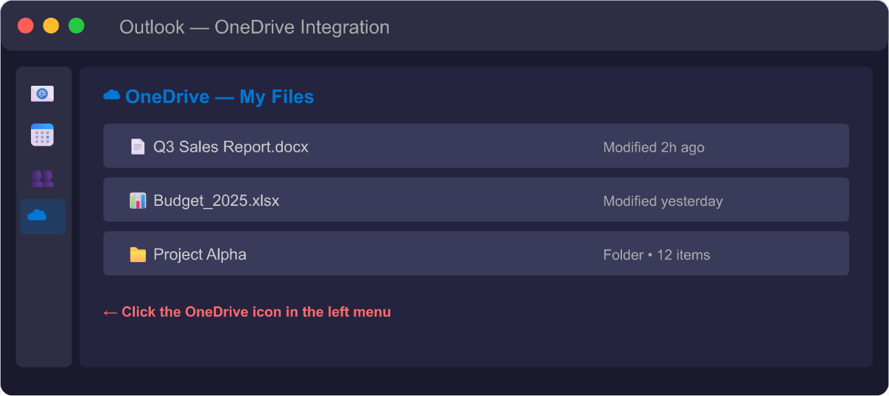
AI Assistance with Copilot in Outlook
Let AI handle the heavy lifting
Leveraging Microsoft Copilot natively within Outlook to draft messages, summarize long threads, prioritize your inbox, and prepare for meetings.
A. Set Copilot Draft Instructions
- Navigate to Copilot → Settings → Draft Instructions
- Turn the toggle on to enable personalized drafting
- Type your preferences (e.g., “Use a friendly tone”, “Use UK spelling”, “Use bullet points”)
- Click Save — Copilot will now personalize all future drafts to your style
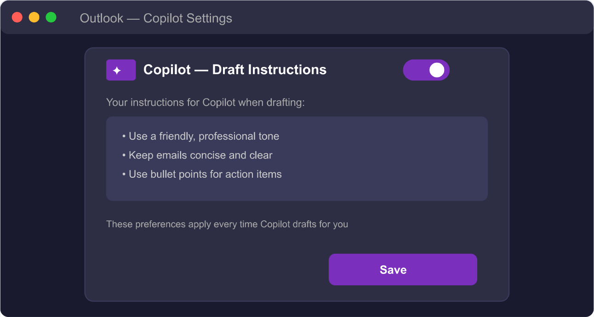
B. Prioritize Important Emails
- Go to Settings → Copilot → Prioritize
- Turn the toggle on and click “Customize”
- Define high-priority rules (e.g., “emails from [manager name]” or specific project names)
- Define low-priority rules (e.g., newsletters, automated notifications)
- You can then sort your inbox view by priority to focus on what matters most
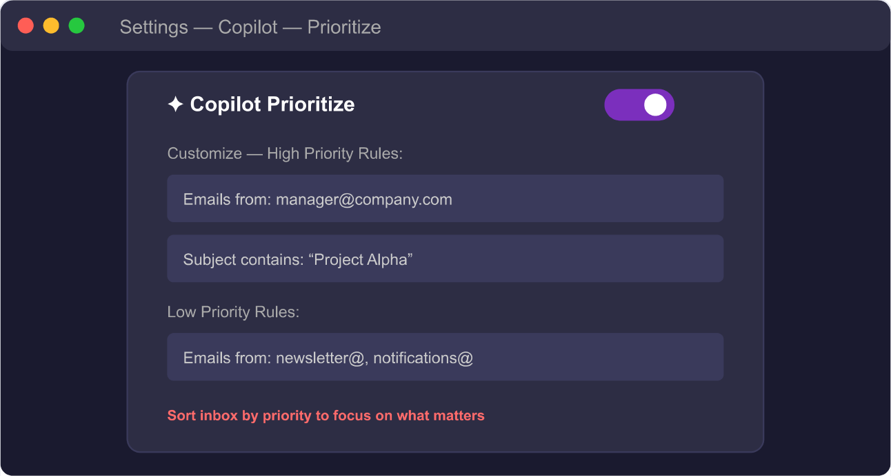
C. Draft and Rewrite Emails
- In a new message window, click the Copilot icon next to “Draft with Copilot”
- Type a prompt describing what you want to write
- To change specific text, highlight it, click the Copilot button
- Choose options like “Auto rewrite”, “Make it longer”, or “Change tone”
- Click “Keep it” when you’re satisfied with the result
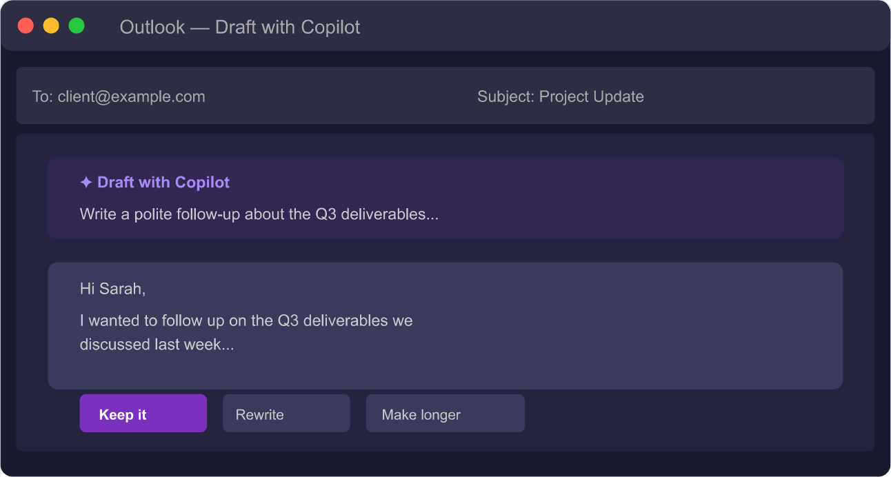
D. Summarize and Search via Chat
- Open the Copilot chat sidebar (click the drop-down → Chat)
- Ensure the “Work” tab is selected
- Ask Copilot to “summarize this email” or “identify an email relating to [topic]”
- Copilot will search across your data and provide a concise summary or link
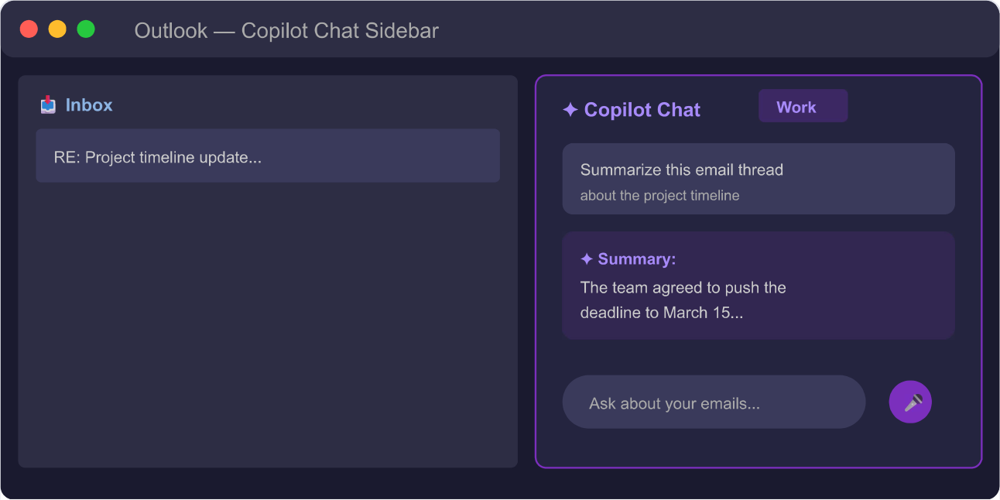
E. Use Voice Chat
- In the Copilot sidebar, click the microphone icon
- Verbally ask Copilot to summarize an email or draft a reply
- Copilot will generate the response in the chat window
- Copy the generated text and paste it directly into your email
F. Draft Meeting Agendas
- When scheduling a new event with Copilot, add your subject line and attendees
- Click “Draft an agenda for me”
- Copilot will analyze the context and participants to generate a custom agenda
- The agenda appears right inside the meeting invite — review and edit as needed
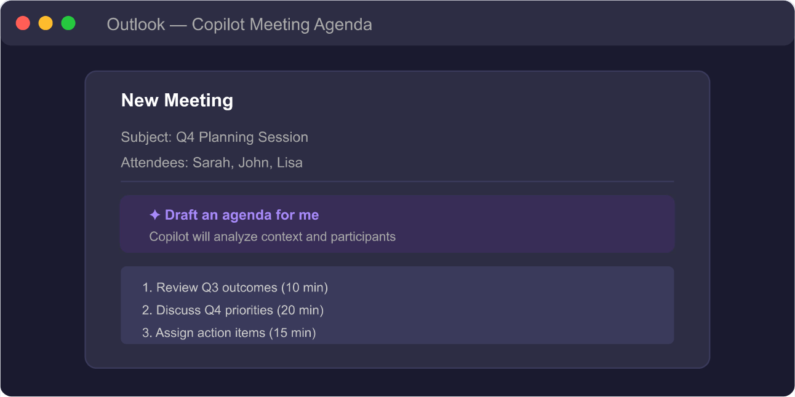
G. Prepare for Meetings
- Open an upcoming meeting invite
- Look for the “Prepare for your meeting” section
- Click “Show insights”
- Copilot will summarize relevant files, emails, and chats you should review before joining
- Walk into every meeting fully briefed without manual searching
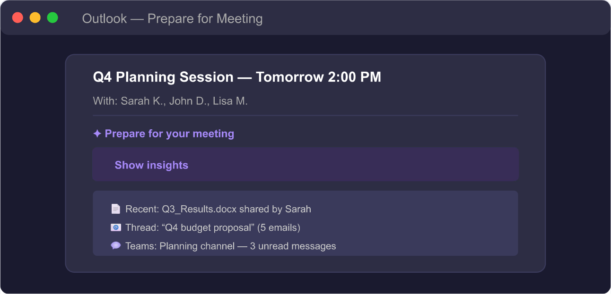
Mastering Microsoft Outlook — Participant Learning Guide. Created by Tic Tech Toe Labs.
Microsoft Outlook: Hands-On Triad Activities
Activity 1: The Workspace & Folder Foundation
Covers Topic 1 (Customizing Interface) & Topic 2 (Inbox Organization)
Objective: Set up a distraction-free workspace and a standardized folder system.
Part 1: Independent Setup (5 minutes)
- All members (A, B, and C) must customize their own Outlook interface:
- Switch to the Classic Ribbon.
- Change Message Density to Compact or Cozy.
- Enable Pop-out Replies (Settings > Email > Compose and reply).
- Create the 3-Folder System: “Action Items”, “Waiting On”, and “Read Later”.
- Assign a distinct Color Category to each of the three folders.
Part 2: Triad Verification (2 minutes)
- Turn your screens toward each other (or screen share).
- Person A verifies Person B’s setup.
- Person B verifies Person C’s setup.
- Person C verifies Person A’s setup.
Activity 2: The Triage Relay
Covers Topic 2 (Inbox Organization)
Objective: Practice processing incoming emails quickly using the Archive, Folder, and Rules systems.
Step 1: Send the Test Emails
- Person A sends an email to Person B with the subject: “URGENT: Project Approval Required”
- Person B sends an email to Person C with the subject: “Task Delegated to You: Review Q3 Numbers”
- Person C sends an email to Person A with the subject: “Weekly Newsletter: Industry Updates”
Step 2: Process the Inbox
- Person B (Receiving Urgent): Drag the email from Person A into the Action Items folder. Open the folder and Pin the email to the top.
- Person C (Receiving Delegated Task): Forward the email back to Person B with a note saying “I will handle this.” Then, categorize the original email with a new color category called “Q3 Project” and drag it to your Action Items folder.
- Person A (Receiving Newsletter): Right-click the email from Person C and create a Rule. Set the condition to catch emails from Person C with “Newsletter” in the subject, and set the action to move it automatically to your Read Later folder. Run the rule immediately.
Activity 3: The Scheduling Showdown
Covers Topic 3 (Calendar Management)
Objective: Coordinate complex schedules using drag-and-drop, polls, and meeting buffers.
Step 1: The Drag-and-Drop Meeting
- Person A sends an email to B and C titled: “Brainstorming Session Needed” with a brief sentence about needing to meet.
- Person B opens the “My Day” sidebar, drags Person A’s email onto their calendar to create a meeting, and invites both A and C.
- Requirement: Person B must use a Scheduling Poll to offer three different time slots and insert the poll into the invite.
Step 2: Voting and Buffers
- Person A and C open the email and vote on the poll.
- Once a time is chosen, Person B finalizes the meeting. Before sending the final invite, Person B must go to Settings and ensure Meeting Buffers are turned on (e.g., end 5 minutes early).
Step 3: The Silent Follow-up
- Person C goes to their calendar, right-clicks the newly created Brainstorming meeting, and selects Duplicate event to schedule a follow-up for the next week.
- Person C adds a fake external email address to the attendee list and chooses “Only added or removed attendees” when prompted, ensuring A and B do not get spammed with another notification.
Activity 4: Ecosystem Integration
Covers Topic 4 (Microsoft 365 Integrations)
Objective: Move work out of the inbox and into To-Do, Teams, and the Calendar.
The Workflow:
- Person C sends a long email to Person A and Person B detailing a complex fake project (e.g., “Website Redesign Phases 1-3”).
- Person A clicks the “Apps” button on the email and selects Share to Teams. Person A shares it to a Teams chat or channel that includes B and C, adding a comment: “Let’s discuss this here instead of email.”
- Person B opens the “To Do” sidebar in Outlook, drags Person C’s email into To-Do to create a task, and then drags that newly created task onto their Outlook Calendar to block out 30 minutes of focus time.
- All Members: Click the OneDrive icon on the left menu of Outlook and practice locating a file and copying its link without leaving the Outlook window.
Activity 5: AI-Powered Productivity
Covers Topic 5 (AI Assistance with Copilot)
Objective: Utilize Copilot to summarize threads, draft replies, and create agendas.
Step 1: The Messy Thread
- Person A, B, and C quickly reply back and forth to a single email thread 4-5 times with random updates, contradictions, and noise (e.g., changing meeting locations, arguing over coffee flavors for the break room).
Step 2: AI Summarization & Drafting
- Person A opens the Copilot Chat sidebar, ensures the “Work” tab is selected, and asks Copilot to “Summarize the coffee flavor email thread.”
- Person B opens a new reply to the thread. Using the “Draft with Copilot” feature, instruct the AI to: “Write a polite but firm email deciding that we will only have decaf coffee. Use bullet points.”
- Person C takes the summarized information, creates a new Calendar Event for a “Coffee Committee Meeting,” adds A and B, and clicks “Draft an agenda for me” using Copilot to auto-generate the meeting details.
Step 3: Debrief
- The triad reviews the Copilot outputs together. Discuss how accurate the summary was and how well Copilot…